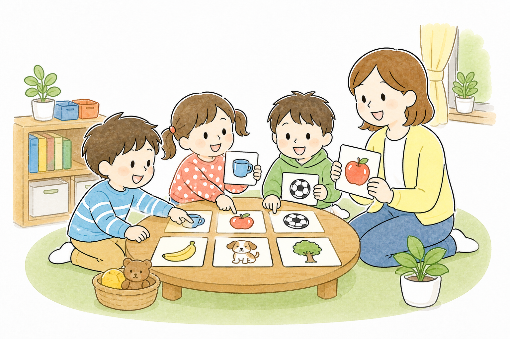
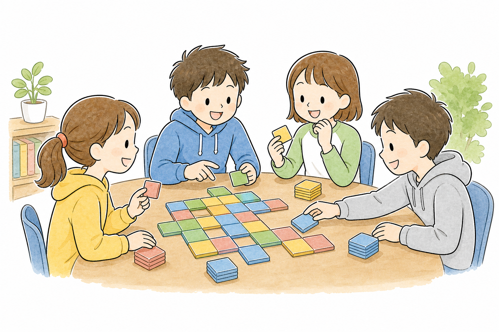
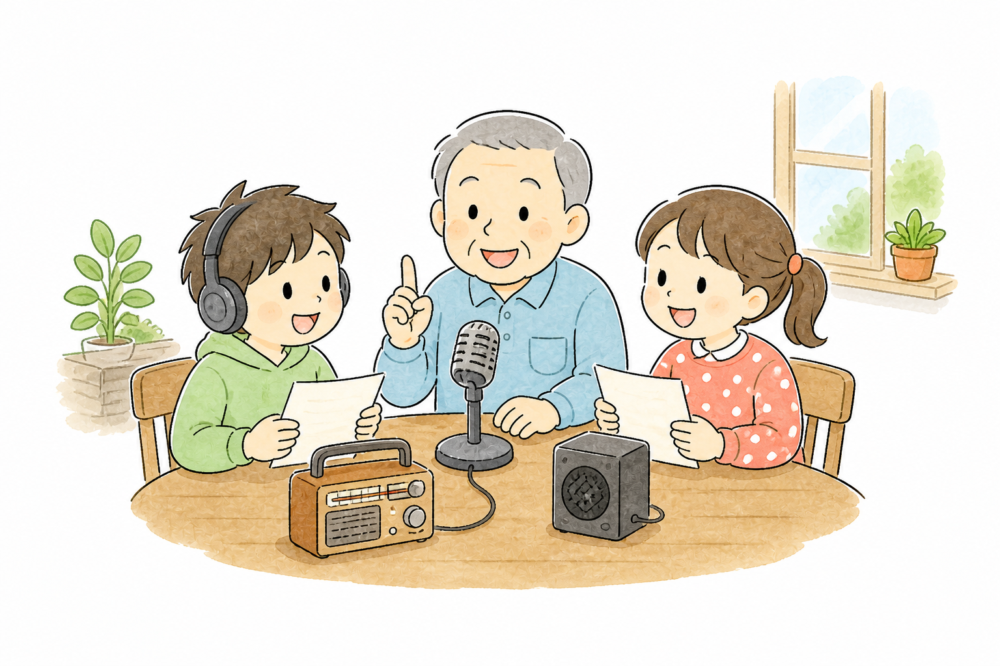
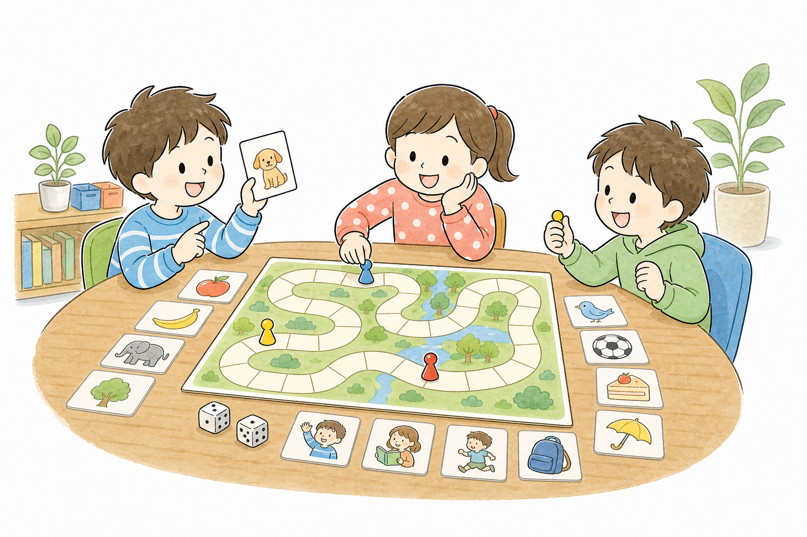
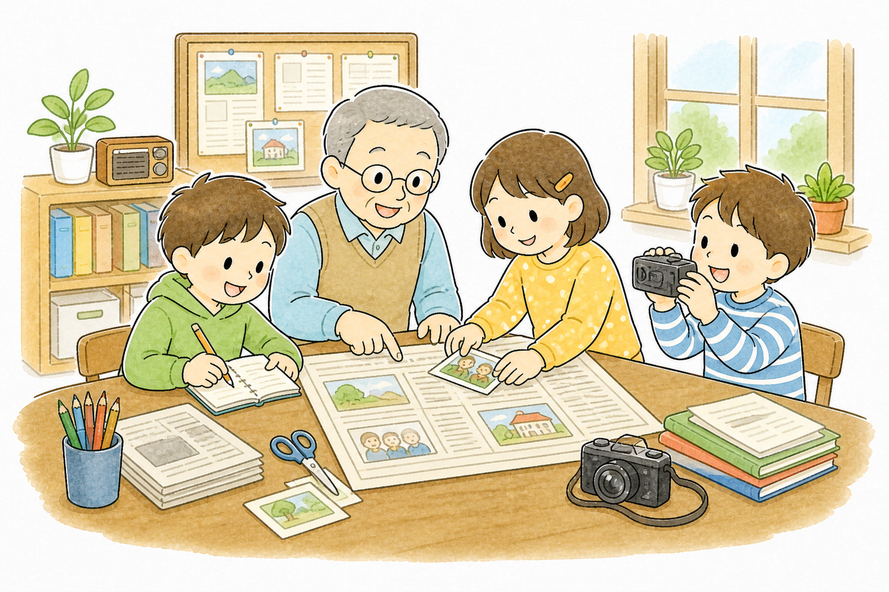

返回
詞彙卡
選擇腔別
四縣腔
海陸腔
大埔腔
饒平腔
詔安腔
南四縣腔
選擇主題
請先選擇腔別，再選課別開始。
已完成

第一階段
客語互動場景
觀察場景圖片，點選物件學習常見客語詞彙。

第二階段
字磚拼拼樂
從字磚中找出正確字詞，依序排出客語詞彙。

第三階段
庄頭廣播電台
聽廣播情境與線索，辨認進階生活詞彙

第四階段
字句大富翁
辨認進階生活詞彙與讀懂課文內容

第五階段
庄頭報社
依據文章內容查證題目，扮演記者將報導推送到正確的版面，贏取讀者支持與信用。
單字
第
1
題 / 5
看華語選客語
白飯
請選出正確的四縣腔詞。
重選
下一題
恭喜你完成第1課「𠊎好食个東西」！
看懂食物圖片
選出生詞
認得拼音
完成第1課測驗
再玩一次
回到課堂測驗